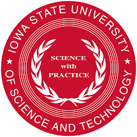

AI-AgARENA: Advancing AI for Climate-Smart Agriculture
A national, multi-site AI-ready testbed enabling cutting-edge research in cyber-agricultural systems for sustainable farming, climate resilience, and food security.

'AI-ready Cyber-Agricultural Systems Testbed (AI-AgARENA)' seeks to develop an AI-ready cyber-agricultural system that enables AI research for climate-smart agriculture by integrating autonomous farm management, continuous real-time sensing of soil and plant conditions and weather parameters, and intelligent data harvesting for analysis and visualization. AI-AgARENA is a multi-state, multi-site AI-ready farming testbed that integrates and enhances existing agricultural research platforms—complemented with wireless networking, sensors, ground robots, and drones—to develop and validate AI tools for cyber-agricultural systems.
The mission is to serve as a national AI-Ag research hub that stimulates collaborations within an innovation ecosystem to improve sustainable farming practices, increase climate resiliency, and ensure food security. To achieve this, key technological innovations include the adaptation of AI-driven sensing, modeling, and actuation through autonomy algorithms, robotic systems, and scalable cyberinfrastructure. The testbed will enable AI-Ag technology demonstrations through at-scale implementations of science and serve as a venue for stakeholder education across public, private, NGO, and governmental organizations—advancing the future of climate-smart, data-driven, and sustainable agriculture.
Partner Institutions

Iowa State University

University of Arizona